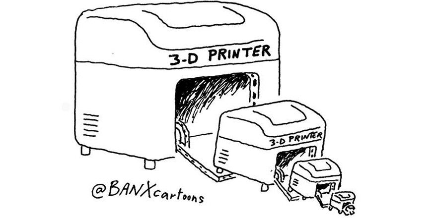

Implement bài toán duyệt cây nhị phân với Rust
Các bài giới thiệu về Rust [1] thì nhiều quá rồi [2] nhưng chưa thấy bài nào nói về việc sử dụng Rust hết, nên hôm nay mình sẽ bắt đầu viết một vài bài áp dụng Rust để implement một số thuật toán cơ bản, mở đầu sẽ là: Thuật toán duyệt cây nhị phân.
Sao? Không thích thuật toán à? Từ từ, đừng bỏ đi vội, mặc dù đề bài có vẻ khô khan nhưng qua bài viết này các bạn sẽ học được kha khá kiến thức quan trọng trong Rust:
- Làm việc với
struct - Sử dụng kiểu
Option<> - Sử dụng kiểu
Box<> - Khai báo biến trong Heap và Stack
- Sử dụng các
attributeđể tùy biến Rust compiler - Sử dụng
pattern matching - Làm việc với
macro - Khai báo method dùng
impl - Thao tác cơ bản với
String
Và quan trọng nhất là cách sử dụng các thông báo lỗi của Rust compiler để tìm manh mối giải quyết vấn đề một cách hiệu quả.
Kiến thức cơ bản
Nói sơ qua một chút kiến thức cơ bản, cây nhị phân (binary tree) là một loại cấu trúc dữ liệu dạng cây (tree), mỗi một node có từ một đến hai node con.
Các tên gọi quy ước trong một node của cây nhị phân:
- Root: là node hiện tại đang xét.
- Left: là node con bên trái của node đang xét.
- Right: là node con bên phải của node đang xét.

Duyệt cây nhị phân (binary tree traversal) là một trong các thuật toán cơ bản khi làm việc với kiểu dữ liệu này. Có 2 cách để duyệt một cây nhị phân đó là duyệt sâu (depth first traversal) và duyệt rộng (breadth first traversal).
Đối với cách duyệt sâu, chúng ta có 3 phương pháp khác nhau, phân loại dựa theo thứ tự thăm (visit) các node con của cây:
In-order: Duyệt theo thứ tự Left -> Root -> Right. Ví dụ cây ở hình trên, thứ tự duyệt sẽ là:
2, 7, 5, 6, 11, 1, 8, 4, 9.Pre-order: Duyệt theo thứ tự Root -> Left -> Right. Ví dụ ở cây trên, thứ tự duyệt là:
1, 7, 2, 6, 5, 11, 8, 9, 4.Post-order: Duyệt theo thứ tự Left -> Right -> Root. Ví dụ ở cây trên, thứ tự duyệt là:
2, 5, 11, 6, 7, 4, 9, 8, 1.
Duyệt rộng thì chúng ta sẽ đi từng level của cây, và duyệt hết tất cả các node ở từng level. Ví dụ cây trên thứ tự duyệt sẽ là: 1, 7, 8, 2, 6, 9, 5, 11, 4.
Implementation
Chúng ta sẽ implement kiểu dữ liệu binary tree trong Rust, sau đó sẽ implement thuật toán duyệt cây cho kiểu dữ liệu này.
Trong quá trình implement, mình sẽ chỉ ra một số lỗi mà người mới học Rust thường gặp phải, và Rust compiler sẽ giúp chúng ta nhận ra và giải quyết các lỗi đó rất hiệu quả.
Còn bây giờ thì chúng ta bắt đầu thôi.
Khởi tạo dự án
Vì đây là một chương trình nhỏ, chúng ta không nhất thiết phải sử dụng cargo để tạo project mới, mà có thể tạo trực tiếp file *.rs và biên dịch nó bằng rustc.
Ở đây mình sẽ đặt tên source file của chúng ta là binary_tree.rs nằm trong thư mục ~/code/playground/.
$ mkdir -p ~/code/playground
$ cd ~/code/playground
$ touch binary_tree.rs
Chúng ta có thể chạy thử một chương trình nhỏ, ví dụ gõ vào file binary_tree.rs nội dung sau:
fn main() {
println!("Hello World!");
}
Biên dịch và chạy đoạn code trên bằng lệnh:
$ rustc binary_tree.rs -o binary_tree
$ ./binary_tree
Bạn có thể viết 2 lệnh này vào một makefile và chạy bằng lệnh make. Hoặc nếu xài vim, bạn có thể sử dụng plugin vim-quickrun (do mình viết, shameless PR :v) để chạy nhanh bằng tổ hợp phím <Leader>e.
Xong rồi, giờ zô code thiệt nè.
Khai báo cấu trúc dữ liệu của một node
Thông thường khi implement kiểu tree, chúng ta sẽ bắt đầu implement từ một node của tree đó.
Theo như định nghĩa ở trên, một node mà chúng ta implement sẽ có các trường (fields) sau:
- Value: Giá trị của node này, ở đây chúng ta dùng kiểu
i32(số nguyên) - Left: Reference tới node bên trái, giá trị này có thể rỗng (optional)
- Right: Reference tới node bên phải, giá trị này cũng có thể rỗng (optional)
Vậy chúng ta sẽ khai báo một struct mới, gồm có 3 fields như trên:
struct Node {
value: i32,
left: Option<Node>,
right: Option<Node>
}
Ở đây i32 là kiểu dữ liệu số nguyên, tương tự như int ở mấy ngôn ngữ khác vậy. Option tức là kiểu optional, nghĩa là nó có thể có giá trị tham chiếu tới đâu đó, hoặc có thể không có. Compile thử xem nào:
$ rustc binary_tree.rs -o binary_tree
error[E0072]: recursive type `Node` has infinite size
--> walkthrough_binary_tree.rs:1:1
|
1 | struct Node {
| ^ recursive type has infinite size
|
= help: insert indirection (e.g., a `Box`, `Rc`, or `&`) at some point to make `Node` representable
error: aborting due to previous error
É, lỗi rồi. Lỗi ngay từ shot đầu tiên luôn :)) để xem lỗi gì nào.
Vấn đề recursive type trong Rust

Nội dung thông báo lỗi nó ghi là: recursive type Node has infinite size, tức là: Node là kiểu dữ liệu đệ quy (vì chúng ta tham chiếu tới Node bên trong chính nó), nên Rust không xác định được kích thước của nó -- quá bự, vô hạn. Tại sao vậy? OK, dừng lại để nói về vấn đề này một chút nhé.
Cũng giống như C/C++, kích thước của một struct sẽ được xác định bằng tổng số kích thước các field bên trong nó. Lấy ví dụ đơn giản, nếu ta có một struct như sau:
struct Point {
x: i32,
y: u8
}
Thì kích thước của Point sẽ bằng kích thước của x (kiểu i32, có 4 bytes) cộng với kích thước của biến y (kiểu u8 có 1 byte), là 5 bytes cả thảy.
Quay trở lại với Node struct của chúng ta, kiểu i32 có 4 bytes, kiểu Option có 1 byte, kích thước của Node sẽ được tính bằng công thức:
$
\begin{align}
\text{Node} &= \text{i32} + 2 \times \text{Option} + 2 \times \text{Node} \\
&= 4 + 2 \times 1 + 2 \times \text{Node} \\
&= 6 + 2 \times \text{Node} \\
&= 6 + 2 \times ( 6 + 2 \times \text{Node}) \\
&= 6 + 2 \times ( 6 + 2 \times ( 6 + 2 \times \text{Node})) \\
&= 6 + 2 \times ( 6 + 2 \times ( 6 + 2 \times (6 + 2 \times \text{Node}))) \\
&= \cdots
\end{align}
$
:))
Kết quả là tính mãi không ra nổi :)) vì cứ đệ quy mãi ở khúc lấy size của Node.
Boxed value và heap
Rồi, vậy cách giải quyết là gì nào? Nếu xem kĩ trong thông báo lỗi, bạn sẽ thấy 1 dòng:
...
= help: insert indirection (e.g., a `Box`, `Rc`, or `&`) at some point to make `Node` representable
...
Xem nào, nó bảo nếu thêm Box hoặc Rc hoặc & các kiểu vào những chỗ tham chiếu tới Node thì sẽ giải quyết được. Vậy thử xem:
struct Node {
value: i32,
left: Option<Box<Node>>,
right: Option<Box<Node>>
}
Compile lại thì sẽ thấy lỗi đó đã hết, ngon lành! Có một cái warning xuất hiện, nhưng bây giờ chúng ta chưa cần nói tới nó, để nói tiếp về vụ Box cái đã.
Tại sao dùng Box<> lại giải quyết được vấn đề recursive struct? Đầu tiên cần hiểu Box<> là gì.
Trong Rust, mặc định mọi giá trị đều được khai báo trong stack [3], chúng ta sử dụng Box<T> khi cần khai báo một biến kiểu T trong heap. Một box thực chất là một smart pointer trỏ tới một giá trị đã được tạo ra trong heap.
Trong trường hợp này, chúng ta đặt Node vào trong Box<> để khai báo dạng Box<Node>, thì thực chất chúng ta đang khai báo một pointer trỏ tới một vùng nhớ kiểu Node trong heap, vậy nên bên trong Node struct của chúng ta lúc này, kích thước của left và right thực chất là kích thước của pointer Box<Node>, và pointer này có kiểu Option.
Trên StackOverflow cũng có một câu hỏi được trả lời khá kĩ về vấn đề Box trong recursive struct, các bạn có thể tham khảo tại đây.
Dead code warning khi compile
Okay, bây giờ quay về lại với cái warning mà rustc đưa ra lúc nãy nhé. Nội dung warning như sau:
warning: struct is never used: `Node`, #[warn(dead_code)] on by default
--> walkthrough_binary_tree.rs:1:1
|
1 | struct Node {
| ^
rustc nói cho chúng ta biết là cái Node struct mà chúng ta tạo ra chưa bao giờ được sử dụng cả. Và thông báo này được đưa ra vì attribute #[warn(dead_code)] được bật sẵn khi biên dịch.
Điều này rất có ích để viết code đẹp, code chuẩn, có thể hạn chế được lượng mỡ thừa không cần thiết... à nhầm, code thừa.
Tuy nhiên vì chúng ta đang học, cho nên có thể tạm tắt thông báo này đi bằng cách thêm attribute #[allow(dead_code)] ở trước phần khai báo struct để báo cho compiler biết rằng dead_code là người quen biết, và việc cho anh ấy đi qua khỏi khâu kiểm duyệt là đúng quy trình, không cần phải lo gì cả:
#[allow(dead_code)]
struct Node {
value: i32,
left: Option<Box<Node>>,
right: Option<Box<Node>>
}
Giờ compile lại sẽ ko còn lỗi nào xảy ra nữa.
Tạo binary tree từ node
Vậy là chúng ta đã khai báo thành công thành phần cơ bản nhất của một binary tree, giờ chúng ta thử dùng kiểu Node này để tạo ra một binary tree xem sao nhé.
Lấy ví dụ với cây sau:

Chúng ta sẽ đi từng bước, tạo từng node một. Đầu tiên là root node của cây trên, khai báo một biến tree, kiểu Node, có 2 nhánh left và right đều là None.
#[allow(unused_variables)]
fn main() {
let tree = Node {
value: 1,
left: None,
right: None
};
}
Đây là trạng thái cây của chúng ta lúc này:

Chúng ta cũng chèn thêm vào attribute #[allow(unused_variables)] để rust compiler không warning vì chúng ta chưa cần sử dụng biến tree này.
Giá trị của một biến Option và Box
Vậy là chúng ta đã tạo được một node đầu tiên của cây, có giá trị là 1 và 2 node con chưa có gì cả. Giờ mình sẽ giải thích tại sao lại xuất hiện giá trị None, và phải làm gì nếu muốn gán left hoặc right thành một node khác.
Một biến kiểu Option có thể mang giá trị Some(T) (trả về giá trị của T) hoặc mang giá trị None (không trả về gì cả).
Vậy để gán một giá trị không None vào cho một biến Option, chúng ta dùng lệnh Some(...), ví dụ:
let optional: Option<T> = Some(T);
Tiếp, đối với kiểu Box<T>, chúng ta có method Box::new(...) để khởi tạo giá trị cho nó, ví dụ:
let value: Box<i32> = Box::new(5);
Kết hợp 2 cú pháp trên lại, đối với kiểu Option<Box<Node>> của các node left và right, chúng ta sẽ có cách khai báo như sau:
...
left: Some(Box::new(Node { ... })),
...
Giờ thử chèn tiếp 2 node số 7 và 8 vào cây trên nào:
...
let tree = Node {
value: 1,
left: Some(Box::new(Node {
value: 7,
left: None,
right: None
})),
right: Some(Box::new(Node {
value: 8,
left: None,
right: None
}))
};
...
Trạng thái cây lúc này sẽ như thế này:

Sử dụng macro để rút gọn cú pháp
Hẳn là bạn cũng cảm thấy khó chịu với câu lệnh dài dòng Some(Box::new(Node { ... })) cứ lặp đi lặp lại liên tục ở trong code.
Rust cho phép chúng ta tạo ra các macro để rút gọn các thao tác dài dòng, lặp đi lặp lại. Bạn có thể coi macro tương tự như #define của C/C++ nhưng lợi hại hơn rất nhiều. [4]
Thực ra ngay từ đầu chúng ta đã dùng macro rồi, đó chính là lệnh println!, lệnh này cũng là một macro, bạn có thể tham khảo source của Rust để xem nó được khai báo thế nào.
Sẽ rất dài dòng nếu nói chi tiết về macro ở đây, nên bạn có thể tham khảo thêm tài liệu của Rust nhé.
Chúng ta sẽ tạo ra một macro để rút gọn thao tác tạo optional Node ở trên:
macro_rules! node {
( $($props:ident : $value:expr),* ) => {
Some(Box::new(Node {
$($props: $value),*
}))
}
}
Từ giờ chúng ta có thể tạo ra các Node với cú pháp mới là:
...
left: node!(
value: 5,
left: None,
right: None
);
...
Gọn và rõ ràng hơn rất nhiều. Thử áp dụng macro node! vừa tạo để hoàn thành nốt cây nhị phân của chúng ta nào:
...
let tree = Node {
value: 1,
left: node!(
value: 7,
left: node!(
value: 2,
left: None,
right: None
),
right: node!(
value: 6,
left: None,
right: None
)
),
right: node!(
value: 8,
left: None,
right: None
)
};
...
Giờ chúng ta đã có một cây nhị phân hoàn chỉnh đúng với yêu cầu ban đầu.

Duyệt cây
Giờ chúng ta sẽ implement thuật toán duyệt cây, vì bài viết cũng khá dài rồi nên mình sẽ chỉ trình bày một loại của thuật toán duyệt DFS, cụ thể là In-order.
Nhắc lại lý thuyết: chúng ta sẽ duyệt theo thứ tự Left -> Root -> Right.
Ý tưởng để implement thuật toán này là tạo ra một hàm trả về một chuỗi, chuỗi này lưu lại quá trình duyệt từ Node hiện tại đến các node con bên trong nó theo thứ tự của In-order.
Tạo methods với impl
Như vậy là chúng ta cần tạo ra một method cho kiểu dữ liệu Node, trong Rust chúng ta có thể sử dụng từ khóa impl để định nghĩa ra các method cho một kiểu. [5]
impl Node {
fn traversal(&self) -> String {
let mut output = String::new();
// Implement here
return output;
}
}
Bằng cách sử dụng impl, chúng ta đã khai báo một hàm traversal() cho kiểu Node, hàm này không nhận tham số nào cả, đối vối tham số &self trong lệnh khai báo, chúng ta có thể xem nó như là từ khóa this trong các ngôn ngữ như JavaScript để xác định context của hàm hiện tại. Bạn có thể đọc thêm tài liệu về vấn đề này ở phần cuối.
Sử dụng matching để kiểm tra Node rỗng
Giải pháp của chúng ta khá là đơn giản, duyệt từng node và trả về giá trị của node đó nếu có, cộng dồn lại và trả về 1 string để in ra.
Vậy thì việc tiếp theo phải làm đó là kiểm tra xem các node con có tồn tại hay không. Nhớ lại ở trên có đề cập, một biến kiểu Option luôn trả về một trong 2 giá trị Some(...) hoặc None, vậy để kiểm tra ta có thể dùng match, cú pháp của match cũng na ná giống như switch ở các ngôn ngữ khác nên chắc không cần giải thích nhiều [6]:
match self.left {
Some(ref node) => { },
None => { }
}
Chắc không cần giải thích các bạn cũng sẽ hiểu là việc tiếp theo chúng ta có thể sử dụng được biến node ở trong scope của trường hợp Some(...) để tương tác với node hiện tại rồi đúng không nào? Còn trường hợp None, mặc dù không làm gì cả nhưng chúng ta vẫn phải handle nó, nếu không sẽ gặp lỗi khi compile như thế này:
error[E0004]: non-exhaustive patterns: `None` not covered
--> binary_tree.rs:21:15
|
21 | match self.left {
| ^^^^^^^^^ pattern `None` not covered
error: aborting due to previous error
Thông báo lỗi nói rằng: Trường hợp None chưa được cover. Đây cũng là một ví dụ cho thấy sự khắt khe của Rust để đảm bảo không lọt bất kì trường hợp khả nghi nào có khả năng trở thành bug trong lúc runtime cả.
Đối với giá trị của một node, là kiểu i32, chúng ta có thể chuyển về kiểu String bằng lệnh .to_string(), và để thực hiện việc cộng chuỗi, ta cần đưa nó về kiểu &str, vậy cần thêm vào lệnh .as_str(), như vậy ta có đoạn code implement đầy đủ của hàm traversal() như sau:
impl Node {
fn traversal(&self) -> String {
let mut output = String::new();
// Left
match self.left {
Some(ref node) => {
output += node.traversal().as_str();
},
None => { }
}
// Root
output += self.value.to_string().as_str();
// Right
match self.right {
Some(ref node) => {
output += node.traversal().as_str();
},
None => { }
}
return output;
}
}
Cuối cùng, chúng ta có thể gọi hàm này để in ra nội dung của cây:
fn main() {
...
println!("{}", tree.traversal());
}
Kết quả sẽ là:
2 7 6 1 8
Code đầy đủ của chúng ta sẽ là:
struct Node {
value: i32,
left: Option<Box<Node>>,
right: Option<Box<Node>>
}
macro_rules! node {
( $($props:ident : $value:expr),* ) => {
Some(Box::new(Node {
$($props: $value),*
}))
}
}
impl Node {
fn traversal(&self) -> String {
let mut output = String::new();
match self.left {
Some(ref node) => {
output += node.traversal().as_str();
},
None => { }
}
output += self.value.to_string().as_str();
match self.right {
Some(ref node) => {
output += node.traversal().as_str();
},
None => { }
}
return output;
}
}
fn main() {
let tree = Node {
value: 1,
left: node!(
value: 7,
left: node!(
value: 2,
left: None,
right: None
),
right: node!(
value: 6,
left: None,
right: None
)
),
right: node!(
value: 8,
left: None,
right: None
)
};
println!("{}", tree.traversal());
}
Kết thúc
Vậy là chúng ta đã implement thành công một thuật toán đơn giản trong Rust. Và học được khá là nhiều thứ trong quá trình implement.
Các bạn có thể thử thay đổi chương trình trên để implement tiếp các kiểu Pre-order, Post-order hoặc suy nghĩ để implement thuật toán duyệt BFS xem nhé.
Vì bài viết có mục đích dẫn các bạn đi từng bước để ứng dụng Rust vào giải quyết các vấn đề thường gặp, nên thuật toán đưa ra trong bài không phải là giải pháp tối ưu cho bài toán duyệt cây nhị phân, ở phần tiếp theo chúng ta sẽ bàn về các kĩ thuật tối ưu thuật toán này.
Và đừng quên đọc thêm các link tham khảo mình tổng hợp lại ở bên dưới. Hy vọng qua bài viết khá dài này, các bạn cũng làm quen được các điểm đặc biệt trong Rust so với các ngôn ngữ khác, và có thể tiếp tục tìm hiểu thêm về ngôn ngữ thú vị này.
Tham khảo
- [1] Huy Trần, Rust là gì, có ăn được không?, Huy's Blog
- [2] Thạch Lê, MIR - Sự tinh túy của chú cua bé nhỏ Rust, Kipalog
- [3] The Stack and The Heap, The Rust Programming Language Book, Ch. 5.1
- [4] Macros, The Rust Programming Language Book, Ch. 4.34
- [5] Method Syntax, The Rust Programming Language Book, Ch. 4.16
- [6] Pattern Matching, The Rust Programming Language Book, Ch. 4.14